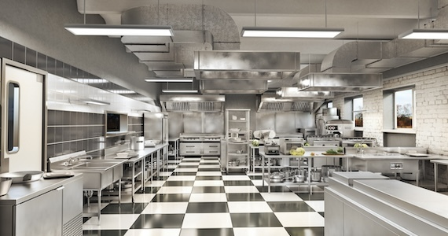
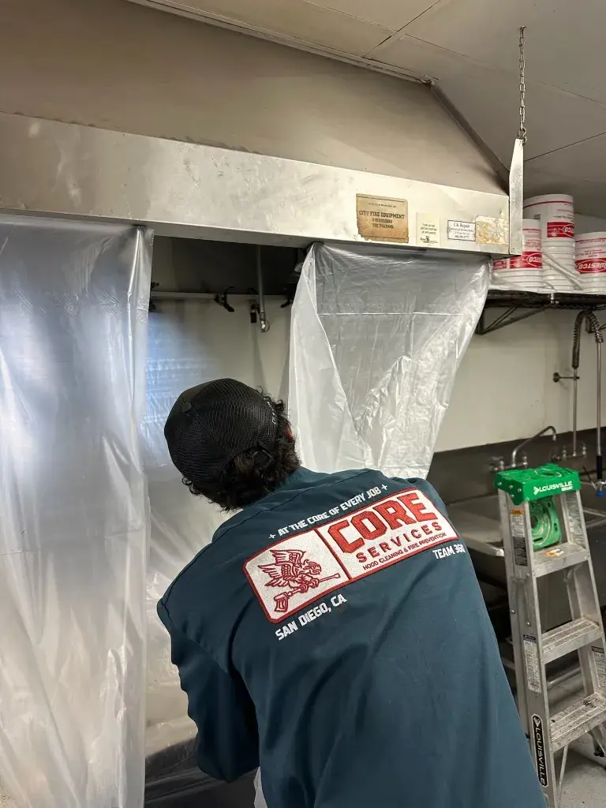

LA JOLLA HOOD CLEANING
Professional commercial kitchen hood cleaning La Jolla. Serving luxury oceanfront restaurants, La Jolla Village, La Jolla Shores, UTC dining, and resort kitchens. NFPA 96 certified, same-day emergency service available. Licensed, bonded & insured. Free walkthroughs for all La Jolla establishments.
Click Here to Book a Custom Quote
Click Here to Call Us
(858) 361-2570
Core Hood Cleaning is La Jolla's premier commercial kitchen exhaust cleaning company. We serve upscale restaurants, luxury hotels, resort kitchens, and fine dining establishments throughout La Jolla with full-system NFPA 96 certified hood cleaning that meets the exacting standards of California Coastal cuisine.
La Jolla represents the pinnacle of San Diego's culinary scene. From Michelin-recommended oceanfront dining to the bustling La Jolla Village restaurant corridor, this affluent coastal community demands impeccable service standards that match its world-class reputation. La Jolla restaurants face unique challenges: salt air corrosion from oceanfront locations, high property values requiring discreet professional service, sophisticated clientele expecting uninterrupted operations, and premium ingredients demanding pristine kitchen environments.
Core Hood Cleaning understands the elevated expectations of La Jolla's dining establishments. We've serviced some of San Diego's most prestigious restaurants—from intimate bistros on Girard Avenue to spectacular oceanfront venues at La Jolla Cove. We provide the white-glove service that La Jolla restaurant owners, hotel executive chefs, and property managers expect, with the technical expertise to handle complex hood systems in historic buildings and modern luxury developments alike.
What Sets Us Apart for La Jolla Establishments:
Whether you're operating an intimate fine dining restaurant on Prospect Street, a bustling cafe in UTC, a resort kitchen at Torrey Pines, or a beachfront seafood restaurant at La Jolla Shores, we deliver the exceptional service La Jolla demands.

Core Hood Cleaning provides comprehensive hood cleaning service throughout all of La Jolla's distinct neighborhoods and commercial districts:
The heart of La Jolla dining on Girard Avenue, Prospect Street, and surrounding streets. We serve fine dining establishments, bistros, wine bars, cafes, and upscale casual restaurants in this walkable village center. Experience with historic buildings, complex ductwork, and limited street parking.
Oceanfront dining along Avenida de la Playa and beachfront properties. We handle the unique challenges of salt air exposure, strict coastal commission requirements, and difficult beach access. Expertise in protecting exhaust systems from accelerated ocean corrosion.
Westfield UTC mall restaurants, The Shops at La Jolla Village, and surrounding commercial dining. Experience coordinating with mall property management, chain restaurants, food court vendors, and standalone restaurants serving UCSD and business park employees.
Lodge at Torrey Pines, Estancia La Jolla, La Valencia Hotel, and other luxury properties. We understand five-star hotel operational standards, coordinate with executive chefs and engineering teams, and schedule around guest services. White-glove service for premium properties.
The Challenge: La Jolla's oceanfront and near-ocean restaurants experience severe salt air exposure. Exhaust fans, ductwork seams, access panels, and hinges corrode 3-5x faster than inland locations. Many La Jolla Shores and La Jolla Cove restaurants have exhaust systems showing significant rust and deterioration.
Our Solution: During every service, we perform comprehensive salt damage inspections. We identify early corrosion before it becomes costly failures, lubricate all moving parts with marine-grade lubricants, and provide detailed recommendations for protective coatings and preventive maintenance. We've helped dozens of oceanfront restaurants extend the life of their exhaust systems through proactive maintenance.
The Challenge: Many La Jolla Village restaurants occupy historic buildings with unconventional ductwork routing, difficult rooftop access, and systems retrofitted into buildings never designed for commercial kitchens. Access panels may be in unexpected locations, ductwork may have unusual configurations, and roof access can require special equipment.
Our Solution: Our team has extensive experience with La Jolla's historic restaurant buildings. We've cleaned hundreds of hood systems in older structures and know how to navigate complex access challenges. We bring specialized equipment for difficult rooftop access and take time to thoroughly understand each unique system configuration.
The Challenge: La Jolla restaurants serve affluent clientele with high expectations. Hood cleaning must be discreet, professional, and completed without any disruption to guest experience. Technicians may need to move through dining areas during setup, and any noise or disturbance must be minimized.
Our Solution: We schedule service during closed hours or early morning before restaurant operations begin. Our uniformed technicians are trained in professional deportment for upscale environments. We coordinate closely with management on timing, access, and any special requirements. Many La Jolla clients don't even realize we've been there until they see the sparkling clean hood system.
The Challenge: La Jolla Village has extremely limited street parking, especially on Girard Avenue and Prospect Street. Loading zones are scarce, and parking enforcement is strict. We need access for equipment and water supply, but can't block restaurant entrances or occupy customer parking.
Our Solution: We coordinate parking and access in advance with each restaurant. We arrive during low-traffic periods, use compact equipment configurations when needed, and work efficiently to minimize our parking footprint. For particularly challenging locations, we've developed creative solutions like early morning service or coordinating with neighboring businesses.
Upscale restaurants, Michelin-recommended establishments, chef-driven concepts, wine bars with full kitchens, tasting menu venues.
Five-star hotel restaurants, resort dining rooms, hotel banquet kitchens, room service prep areas, spa cafes.
Oceanfront seafood houses, oyster bars, sushi restaurants, contemporary fish concepts. Expertise with high-volume seafood cooking.
European-style cafes, breakfast/brunch spots, artisan bakeries, coffee roasters with food service.
Westfield UTC restaurants, mall food court vendors, business park dining, chain restaurants, fast casual concepts.
Campus dining facilities, student-oriented restaurants, research park cafeterias, quick service near university.
La Jolla falls under San Diego Fire-Rescue Department jurisdiction with rigorous enforcement standards befitting one of California's most prestigious communities. San Diego County Environmental Health Department conducts frequent inspections of La Jolla establishments, particularly high-profile oceanfront and Village restaurants.
Emergency Red Tag Response: If San Diego County Environmental Health red-tags your La Jolla restaurant for hood compliance violations, contact us immediately at (858) 361-2570. We provide same-day emergency service to get your high-revenue establishment back in operation within 24 hours. We understand that every hour of closure costs thousands in lost revenue for La Jolla restaurants. We've successfully resolved red tag violations for dozens of La Jolla establishments.
Property Insurance Compliance: La Jolla's high property values mean substantial insurance policies with strict maintenance requirements. Most commercial property insurance in La Jolla requires documented proof of regular hood system cleaning. After every service, you receive an NFPA 96 certificate of performance and complete photo documentation that satisfies insurance requirements. If a kitchen fire occurs and you cannot demonstrate regular professional maintenance, your insurance claim may be denied, exposing you to catastrophic liability.
Coastal Commission & Environmental Regulations: Oceanfront La Jolla properties face additional environmental oversight. Our cleaning processes comply with all coastal water quality regulations, and we properly dispose of grease waste according to San Diego County environmental standards. We provide documentation of compliant waste disposal when required for coastal permits.
La Jolla restaurant hood cleaning typically ranges from $350-$950 per service, depending on system size, ductwork length, rooftop access complexity, and oceanfront location factors. Fine dining establishments and hotels with multiple hoods or extensive ductwork may invest $1,200-$2,000+ per service. The only accurate way to price your specific system is through a complimentary walkthrough where we assess your hood configuration, ductwork routing, access challenges, and cleaning frequency requirements. Call (858) 361-2570 to schedule your free consultation.
Yes! We understand that La Jolla restaurants operate on high revenue-per-hour models where closure is extremely costly. If the health department red-tags your kitchen or you have an urgent inspection, we provide same-day emergency service throughout La Jolla. Call (858) 361-2570 before noon and we can typically service your establishment that evening or overnight. We've helped numerous La Jolla restaurants resolve emergency compliance issues and reopen within 24 hours.
Cleaning frequency depends on cooking volume, equipment type, and operating hours. High-volume La Jolla Village restaurants with charbroilers, wok stations, or wood-fired ovens typically require monthly cleaning. Most full-service restaurants need quarterly service (every 3 months). Breakfast/lunch cafes and lower-volume establishments may only require semi-annual cleaning. During your free walkthrough, we'll assess your specific cooking operations and recommend the appropriate NFPA 96 compliant frequency. We never over-recommend service—we want you to spend appropriately while maintaining full compliance.
Absolutely. Most La Jolla fine dining establishments require service after 10 PM or 11 PM to avoid interfering with premium dinner hours. We routinely schedule overnight service for upscale restaurants, starting after your last seating and completing before morning prep begins. Our team operates professionally and quietly, respecting your establishment's atmosphere and guest experience. We've serviced some of San Diego's most prestigious restaurants during overnight hours without any guest awareness.
Oceanfront and near-ocean La Jolla restaurants face accelerated corrosion on exhaust systems from salt air exposure. During every service, we perform detailed corrosion inspections, checking exhaust fans, hinges, access panels, ductwork seams, and all metal components. We lubricate all moving parts with marine-grade lubricants designed for coastal environments. We photograph and document any corrosion issues and provide recommendations for protective coatings, component replacement, or preventive maintenance. Early detection prevents expensive emergency repairs and system failures. Many La Jolla Shores and La Jolla Cove restaurants rely on our corrosion monitoring to extend equipment life.
Yes! We have extensive experience with luxury hotel brands including Four Seasons, Fairmont, Hilton, Marriott, and independent luxury properties. We understand five-star hotel operational standards, documentation requirements, and coordination protocols. We work directly with executive chefs, engineering departments, and property management to ensure seamless service that meets corporate brand standards. We provide all required documentation in formats specified by hotel corporate offices and maintain digital records accessible for audits and compliance reviews.
We've serviced hundreds of La Jolla Village restaurants with challenging parking and access situations. We coordinate with you in advance to arrange loading zone access, schedule service during low-traffic periods (often very early morning), and use compact equipment configurations when needed. For rooftop access challenges—whether internal ladders, external fire escapes, or multi-story climbs—we bring appropriate equipment and expertise. No La Jolla building is too challenging for our experienced team.
Yes! Many La Jolla restaurants lease commercial spaces where property management companies require documentation of hood system maintenance for insurance, fire safety, and lease compliance. After every service, we provide comprehensive certificates of performance, before/after photographic documentation, and digital access via our customer portal. We can coordinate directly with property managers, send documentation to corporate offices, and maintain permanent digital records. We work with numerous La Jolla property management companies and understand their documentation requirements.
Most standard single-hood systems require 2-4 hours for complete NFPA 96 certified cleaning (hood interior, ductwork, exhaust fan, and rooftop components). Larger systems, multiple hoods, extensive ductwork, or complex access can extend service to 4-6 hours. Fine dining establishments and hotels with elaborate multi-hood systems may require 6-8+ hours. During your free walkthrough, we'll provide an accurate time estimate based on your specific system configuration. We work efficiently to minimize downtime while ensuring thorough, compliant cleaning.
We serve all of La Jolla including La Jolla Village, La Jolla Shores, La Jolla Cove, Bird Rock, Windansea, UTC/University City, Torrey Pines, and surrounding areas. From oceanfront restaurants at La Jolla Cove to UTC mall dining to resort kitchens at Torrey Pines, we provide comprehensive hood cleaning service throughout the entire La Jolla community. Call (858) 361-2570 to discuss service for your specific La Jolla location.
Serving La Jolla's Premier Restaurants & Hotels